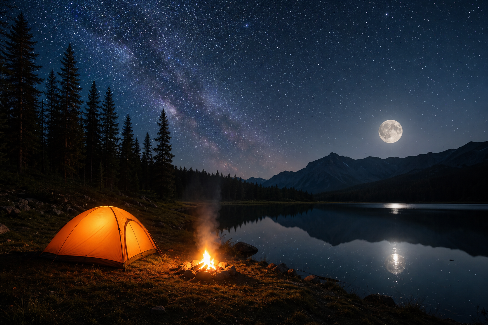

Mundo Camping
Sobre mí
Llevo más de una década durmiendo en tienda, probando sacos a cero grados y devolviendo linternas que prometían más de lo que daban. Aquí cuento lo que he aprendido en el campo para que no repitas mis errores —ni gastes de más.

Empecé con una tienda prestada (y muchas noches mal dormidas)
Mi primer campamento fue en los Pirineos con una tienda que me prestó un amigo. Olía a humedad, pesaba como un saco de patatas y tardé cuarenta minutos en montarla sin saber muy bien qué varilla iba dónde. Aun así, aquella mañana con el café hecho junto al fogón me enganchó: quería repetir, pero con equipo que no me hiciera pasar mal rato.
Desde entonces he acampado en verano, en otoño con heladas y en salidas donde el tiempo se ha torcido sin avisar. He dormido bien con sacos baratos y he pasado frío con modelos que en papel eran «de montaña». He comparado una Naturehike de dos kilos con una Quechua del decatlón del vecino: la diferencia no siempre está en el precio, sino en detalles que no ves en la foto —cómo cierra la cremallera, si el suelo se hunde en tierra blanda, si el mosquetón del viento aguanta cuando sopla de verdad.
Mundo Camping salió de ahí: de la frustración de comprar algo con cuatro estrellas en Amazon y descubrir en la segunda salida que no era para tu uso. No escribo para venderte la tienda más cara; escribo para que la próxima que compres sea la última que tengas que cambiar en mucho tiempo.
Por qué abrí este sitio en lugar de fiarme solo de Amazon
Hace unos años busqué tienda para dos personas. Entre ficha técnica y reseñas de cinco estrellas elegí un modelo «impermeable» y «ultraligero». En mi primera salida con lluvia fina pero constante —unas seis horas seguidas— el agua empezó a colarse por una costura del suelo. No era un diluvio; era exactamente el tipo de día que más repites cuando acampas en norte de España. La tienda volvió a su caja y entendí que las valoraciones no te cuentan eso.
Mundo Camping lo monté para responder a preguntas concretas: ¿esta tienda aguanta dos adultos y un perro? ¿Este saco sirve en octubre en altura o solo en verano en la playa? ¿Merece la pena pagar el doble por 200 gramos menos? Familias, parejas y gente que sale dos o tres veces al año no necesitan un catálogo entero: necesitan alguien que diga «yo lo he usado así y me fue bien o mal».
Por eso publico guías destacadas y comparativas en tiendas de campaña, sacos, esterillas e iluminación. Cada una nace de una duda que me han escrito por correo o de un error que yo mismo he pagado con euros y con horas de frío.
Montar la tienda en el jardín antes de recomendarla
Antes de incluir una tienda en una guía, la monto al menos dos veces: una con prisa, como cuando llegas al camping con poca luz, y otra con calma midiendo tiempos. Apunto si las varillas se enganchan, si las instrucciones son un folleto confuso y si cabe en el maletero sin desmontar el resto del equipaje. En campo compruebo el viento con cuerdas bien tensas y mal tensadas —porque en la montaña casi nadie las deja perfectas a la primera.
En mi última comparativa de dos plazas llevé dos modelos a la misma zona: uno montó en doce minutos y otro me hizo sudar veinticinco con el mismo viento lateral. El más rápido no era el más caro. Ese tipo de detalle es el que intento trasladar a cada artículo, con medidas reales y sin repetir lo que ya dice el fabricante en la caja.
Sacos, esterillas y linternas: lo que la ficha no explica
Un saco marcado para 0 °C me dejó tiritando a 8 °C con ropa interior. No porque el saco fuera malo del todo, sino porque yo dormía en una esterilla fina sobre suelo frío y el aislamiento por abajo se iba al garete. Desde entonces siempre pruebo saco + esterilla juntos, como los usarías tú, no en laboratorio.
Con las linternas frontales he tenido modelos que en el salón iluminan media habitación y en el campamento, a la segunda noche, bajan a un brillo miserable con la batería al 40 %. Ahora las dejo encendidas en modo medio durante una tarde entera antes de fiarme. Si no aguantan eso, no las recomiendo aunque el precio sea tentador.
Cuando comparo marcas —Decathlon, Naturehike, Coleman, Ferrino y otras que aparecen en las guías— no busco un ganador absoluto. Busco para quién sirve cada una: quien va ligero en mochila, quien lleva niños, quien prioriza que dure diez temporadas en el trastero. Si un producto flojea en algo importante, lo digo aunque tenga enlace de afiliado.
Afiliados de Amazon: cómo gano dinero sin mentirte
Parte de los enlaces de este sitio son de afiliado de Amazon. Si compras, recibo una comisión pequeña sin que tú pagues un céntimo más. Ese dinero paga el hosting, el tiempo de pruebas y las horas de redacción. No acepto pagos de marcas para colocar un producto arriba en la lista.
He devuelto equipo que no cumplía después de probarlo. He actualizado guías cuando un modelo nuevo salía mejor que el que recomendaba el año pasado, aunque eso significara cambiar el enlace que más se clicaba. Prefiero que vuelvas a leerme en tu próxima salida a que compres algo hoy y me mandes un correo enfadado porque la cremallera se atascó con dos grados bajo cero.
Si quieres saber más sobre mí o proponer un producto para analizar, puedes escribirme desde la página de contacto. Leo todo; no siempre puedo responder al día siguiente, pero sí leo con atención lo que cuentas de tu experiencia.